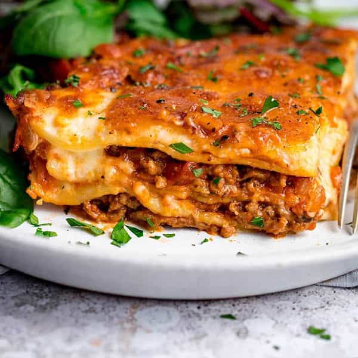
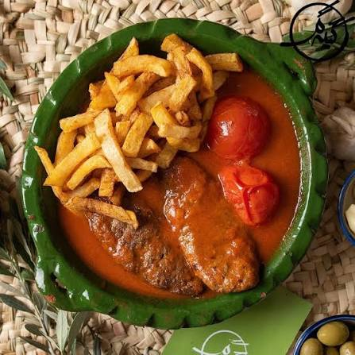
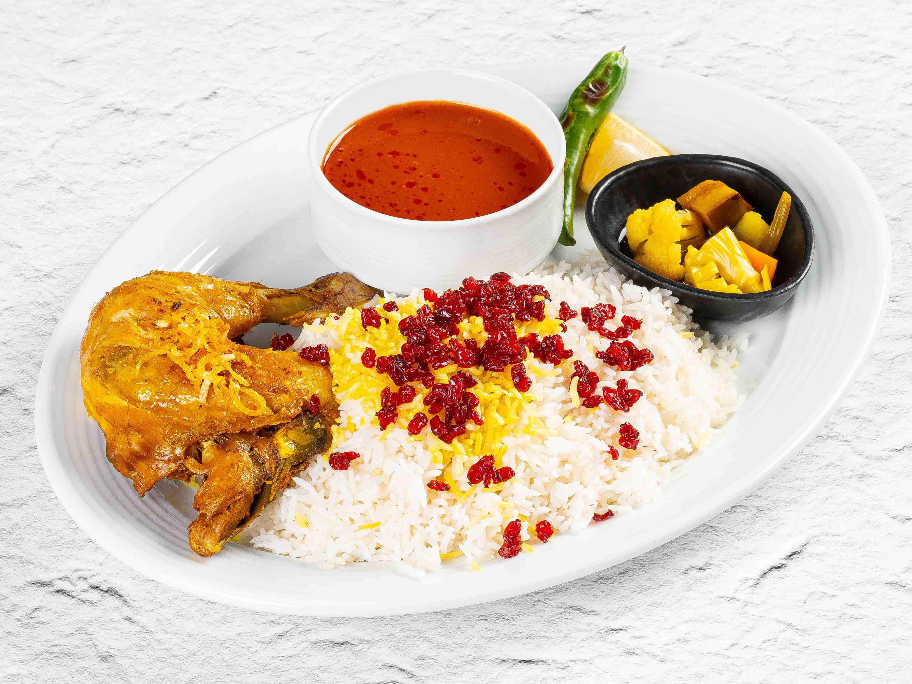

سلام! من نگین هستم. یکی از سرگرمیهای من پختن و تست کردن غذاست. از پرسهزدن بین مزهها و طعمهای مختلف لذت میبرم. به نظرم اگر یک غذایی با توجه و دقت پخته بشه حتما توی ذهن، خودش رو جا میکنه. مگر اینکه مخاطب به صورت کلی مزهاش رو در هیچ حالتی دوست نداشته باشه.
لازانیا غذایی هست که از همون لحظهای که از فر بیرون میاد، توجه آدم رو به خودش جلب میکنه. لایههای پاستا، گوشت و پنیر کنار هم ترکیبی میسازن که هم ظاهر وسوسهکنندهای داره و هم طعمی که بهسختی فراموش میشه.

کباب تابهای برای من یادآور غذاهای ساده اما دوستداشتنی خانگی هست. ترکیب گوشت مزهدار شده با گوجههای آبدار و عطر ادویهها، غذایی رو میسازه که بدون پیچیدگی خاصی میتونه لذتبخش باشه. به نظرم جذابیت اصلی کباب تابهای در اینه که با مواد اولیه ساده میتونیم طعمی آشنا و دلنشین خلق کنیم.

زرشکپلو برای من از اون غذاهایی هست که یک مزه آشنا و دلچسب داره. عطر زعفران و کره وقتی با زرشکهای ترش و مرغِ خوبپختهشده ترکیب میشه، طعم و عطر دلپذیری به غذا میبخشه. به نظرم جذابیت این غذا دقیقاً در همین ترکیب ساده و آشنایی هست که هر قاشقش یک طعم متعادل و دوستداشتنی داره.

| نام غذا | مقدار | پروتئین | چربی | کربوهیدرات | کالری |
|---|---|---|---|---|---|
| لازانیا | 100g | 13g | 12g | 18g | 235kcal |
| کباب تابهای | 100g | 18g | 15g | 3g | 220kcal |
| زرشکپلو | 400g | 35g | 18g | 70g | 600kcal |